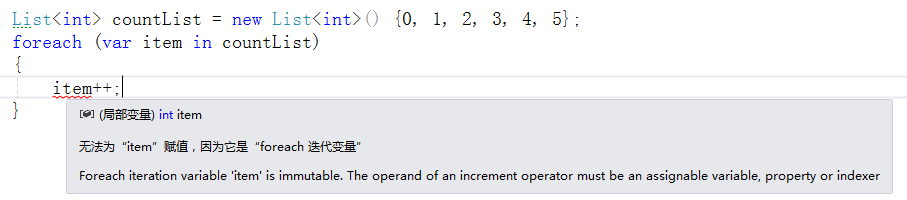

有C#基础的，当问到循环有哪些，会毫不犹豫的说出的for、do while、foreach及while这几种，但是到具体实际开发中，我们遇到一些问题，比如：到底选择哪种？为什么选择这种？哪种好像都可以？，其实在大多数情况下基本上可以通用，但是遇到比如Dictionary <[key] , [value] >只能用foreach遍历，本文带你了解foreach的原理，以及使用场景。
在上边博客《IEnumerable和IEnumerator详解》中，我们自定义了一个集合People，在遍历的时候采用两种方法如下：
Person[] peopleArray = new Person[3]
{
new Person("张三", 15),
new Person("李四", 18),
new Person("王五", 21),
};
People peopleList = new People(peopleArray);
//第一种方法(foreach)
foreach (Person p in peopleList)
{
Console.WriteLine(p.Name + "\t" + p.Age);
}
//第二种方法(while)
IEnumerator enumeratorSimple = peopleList.GetEnumerator();
while (enumeratorSimple.MoveNext())
{
Person p = enumeratorSimple.Current as Person;
Console.WriteLine(p?.Name + "\t" + p?.Age);
}上边的例子，两种遍历方式是等价，但是我们是否发现foreach遍历更加简洁，其实foreach相当于是一种语法糖，目的是让开发者写代码更加便捷。
官方给出的介绍如下：
foreach语句为类型实例中实现 System.Collections.IEnumerable 或 System.Collections.Generic.IEnumerable<T> 接口的每个元素执行语句或语句块。 foreach语句不局限于这些类型，它可应用于满足以下条件的任何类型的实例：
大致意思只要继承IEnumerable 或.IEnumerable<T> 接口的类，都可以用foreach进行遍历，凡是用for可以遍历的数组，基本上都可以用foreach遍历。
遍历数组中的值，这种很简单，代码如下：
List<int> countList = new List<int>() {0, 1, 2, 3, 4, 5};
foreach (var item in countList)
{
Console.WriteLine(item);
}倘若我们遍历数据，并修改每项的值，这个怎么做，比如下边的代码：

当我们试图给item变量赋值的时候，vs智能提示，因为是迭代变量，无法赋值，也就是说当前变量是只读的，不能赋值，那基于这种情况，我们怎么整呢？
其实，foreach已经为我们提供了解决此问题的方法：用ref 迭代变量来设置 stackalloc 数组中每个项的值，具体代码如下：
Span<int> countList = stackalloc int[] { 0, 1, 2, 3, 4, 5 };
foreach (ref int item in countList)
{
item++;
}注意：“引用 foreach 迭代变量”只能在C#7.3及更高的版本中使用（其中，通过NuGet安装System.Memory），所以低版本开发的童鞋还是采用for遍历赋值吧，C#版本和.NET版本对应关系如下：
| C#版本 | .NET版本 | 发布日期 | 特性 |
|---|---|---|---|
| C# 1.0 | .NET Framework 1.0 | 2002-02-13 | 委托、事件 |
| C# 1.1 | .NET Framework 1.1 | 2003-04-24 | APM（异步编程模型） |
| C# 2.0 | .NET Framework 2.0 | 2005-11-07 | 泛型、匿名方法、迭代器、可空类型 |
| C# 3.0 | .NET Framework 3.0 | 2007-11-06 | 隐式类型 |
| .NET Framework 3.5 | 2007-11-19 | 对象集合初始化、自动实现属性、匿名类型、扩展方法、查询表达式、Lambda表达式、 表达式树、分部类和方法、Linq | |
| C# 4.0 | .NET Framework 4.0 | 2010-04-12 | 动态绑定、命名和可选参数、泛型的协变和逆变、互操作性 |
| C# 5.0 | .NET Framework 4.5 | 2012-08-15 | 异步和等待(async和await)、调用方信息(Caller Information) |
| C# 6.0 | .NET Framework 4.6 | 2015-07-20 | C# 6 中的新增功能 |
| .NET Core 1.0 | 2016-06-27 | ||
| C# 7.0 | .NET Framework 4.6.2 | 2016-08-02 | C# 7.0 中的新增功能 |
| C# 7.1 | .NET Framework 4.7 | 2017-04-05 | |
| .NET Core 2.0 | 2016-08-14 | .NET Core 2.0 的新增功能 | |
| C# 7.2 | .NET Framework 4.7.1 | 2017-10-17 | |
| C# 7.3 | .NET Framework 4.7.2 | 2018-04-30 | |
| .NET Core 2.1 | 2018-05-30 | .NET Core 2.1 的新增功能 | |
| .NET Core 2.2 | 2018-12-04 | .NET Core 2.2 的新增功能 | |
| C# 8.0 | .NET Framework 4.8 | 2019-04-18 | C# 8.0 中的新增功能 |
| .NET Core 3.0 | 2019-09-23 | .NET Core 3.0 的新增功能 |
在开发过程，我们对某一知识点不仅要知道怎么用，而且还得知道为什么这么用，只有不断地总结，才能发现具体原理方法，只有这样才能真正的提升自己，不能为了敲代码而敲代码。文中若有不足之处，还望海涵，博文写作不易希望多多支持，后续会更新更多内容，感兴趣的朋友可以加关注，欢迎留言交流！